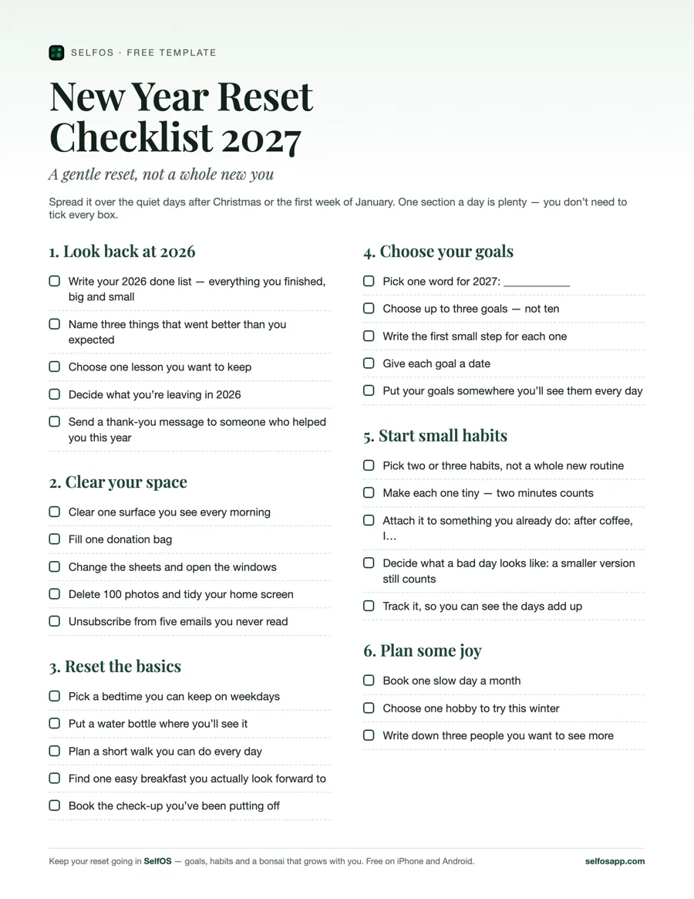
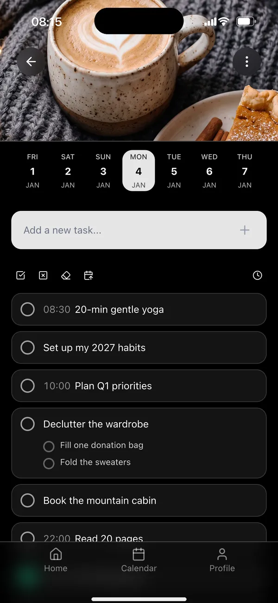

New Year Reset Checklist 2027
A new year reset isn't about becoming a whole new person on January 1st. It's a few calm days to look back, clear some space and choose what you want to carry into 2027. I made this checklist for my own reset — take what helps and skip the rest.
The whole checklist on one printable page (US Letter, PDF).
Download the checklistHow to use it. Spread it over the quiet days after Christmas or the first week of January. One section a day is plenty, and you don't need to tick every box.
1. Look back at 2026
- Write your 2026 done list — everything you finished, big and small
- Name three things that went better than you expected
- Choose one lesson you want to keep
- Decide what you're leaving in 2026
- Send a thank-you message to someone who helped you this year
2. Clear your space
- Clear one surface you see every morning
- Fill one donation bag
- Change the sheets and open the windows
- Delete 100 photos and tidy your home screen
- Unsubscribe from five emails you never read
3. Reset the basics
- Pick a bedtime you can keep on weekdays
- Put a water bottle where you'll see it
- Plan a short walk you can do every day
- Find one easy breakfast you actually look forward to
- Book the check-up you've been putting off
4. Choose your goals
- Pick one word for 2027
- Choose up to three goals — not ten
- Write the first small step for each one
- Give each goal a date
- Put your goals somewhere you'll see them every day
5. Start small habits
- Pick two or three habits, not a whole new routine
- Make each one tiny — two minutes counts
- Attach it to something you already do: after coffee, I…
- Decide what a bad day looks like: a smaller version still counts
- Track it, so you can see the days add up
6. Plan some joy
- Book one slow day a month
- Choose one hobby to try this winter
- Write down three people you want to see more


Keep your reset going in SelfOS
A paper checklist is perfect for the first week. To keep it going into February, put your goals and habits where you already look every day. In SelfOS your goals get a photo and small steps, your habits live in gentle routines you can tick from your home screen, and a little bonsai grows with every day you show up. Free on iPhone and Android.
FAQ
When should I do a new year reset?
Any time between Christmas and mid-January. There's no wrong date — a reset on January 15th is still a reset.
How is a reset different from resolutions?
Resolutions are a list of things to change. A reset starts with looking back and clearing space, then picks a few small steps, which makes it easier to keep.
How many habits should I start with?
Two or three. When they feel automatic, add the next one.